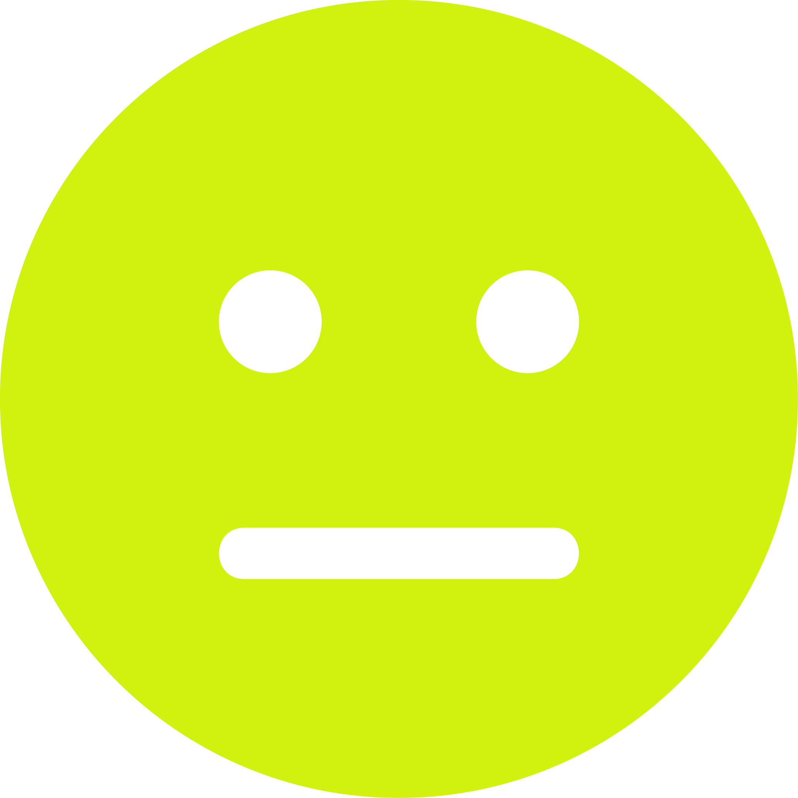
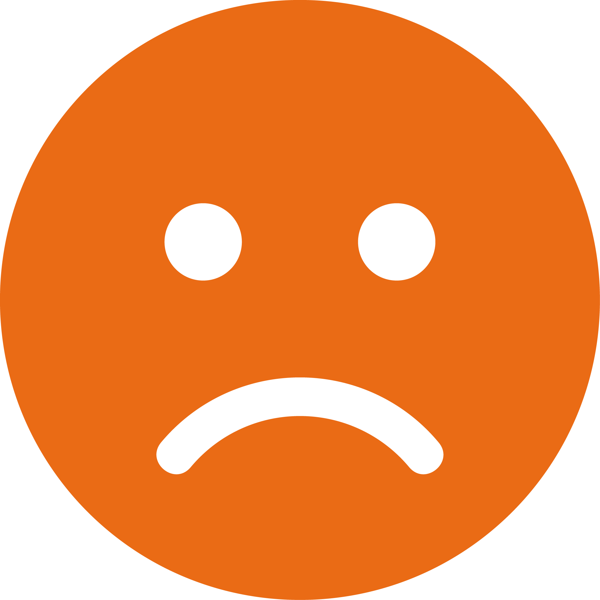
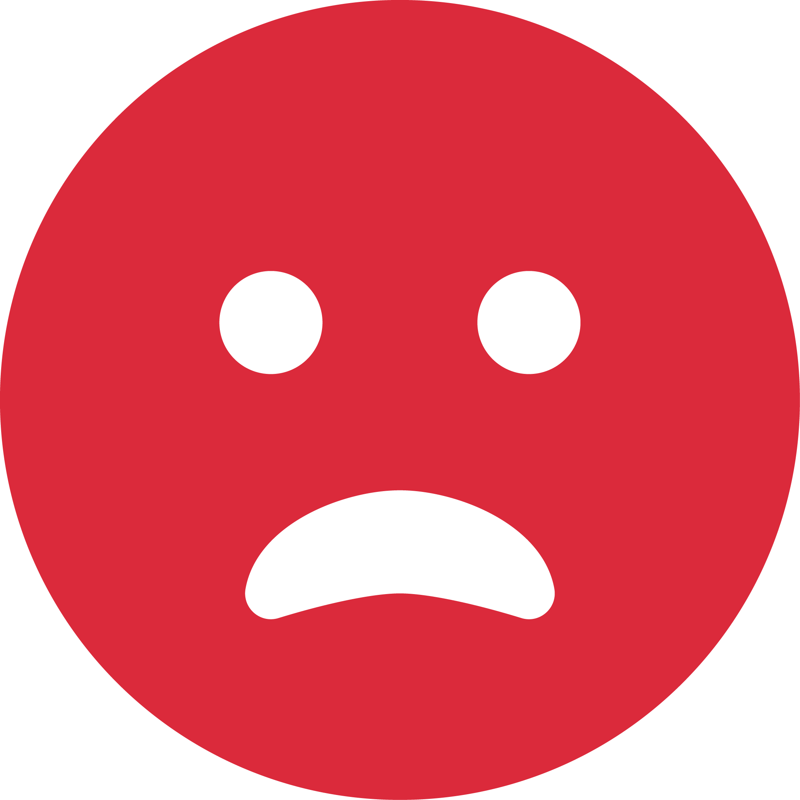
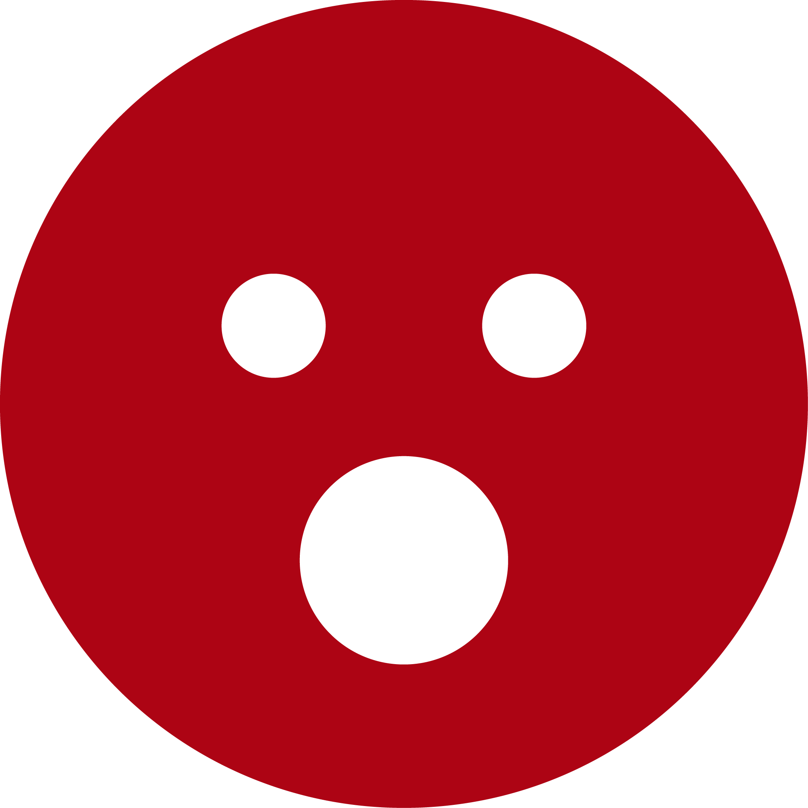

<ion-header>
  <ion-toolbar>
    <ion-title>Escala de Dor</ion-title>
  </ion-toolbar>
</ion-header>

<ion-content class="backgroundContent">
  <div class="humanoContent">
    <div class="humanoCabeca"></div>
  </div>
<ion-footer>
  <div class="container">
    <div></div>
    <div>
      <div class="intensidade">desconfortável</div >
      
    </div>
    <div>
      <div class="intensidade">angustiante</div >
      
    </div>
    <div>
      <div class="intensidade">intensa</div >
      
    </div>
    <div>
      <div class="intensidade">horrível</div >
      
    </div>
    <div></div>
  </div>
  <ion-item>
    <ion-range min="0" max="10" step="2" pin="true"  snaps="true" ticks="true" color="danger">
      Sem dor
      Indescritível
    </ion-range>
  </ion-item>
</ion-footer>
</ion-content>
